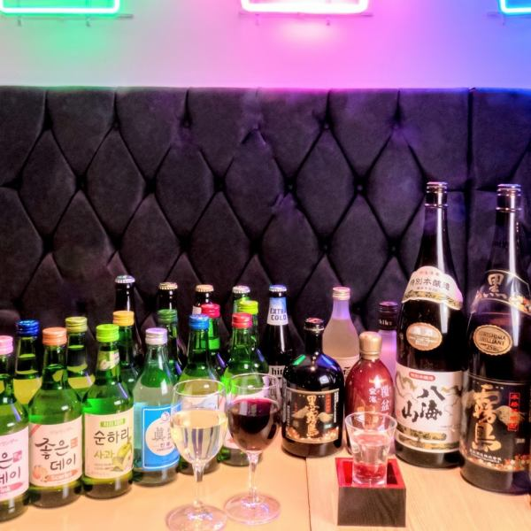
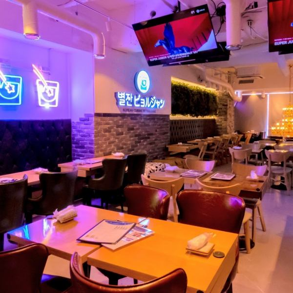
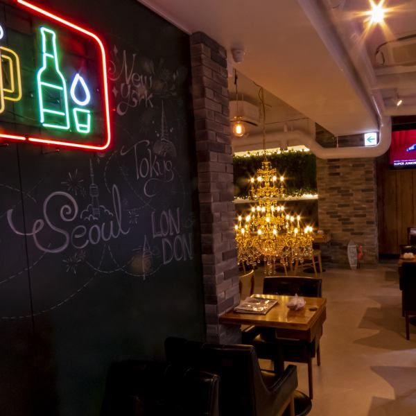
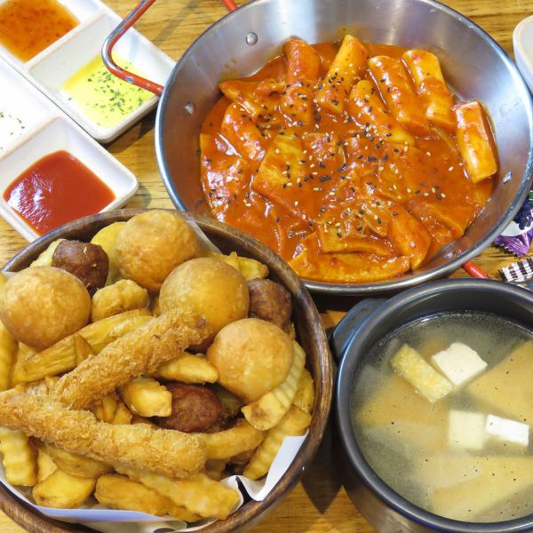
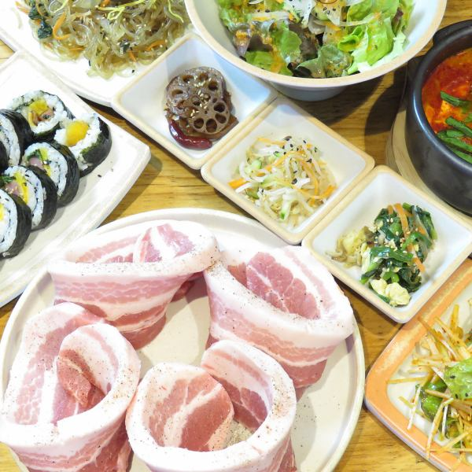
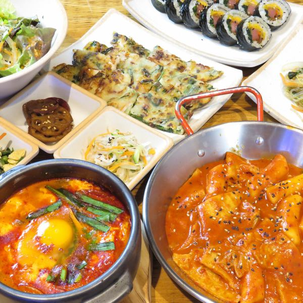
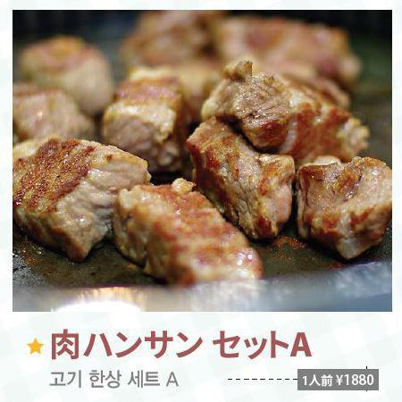
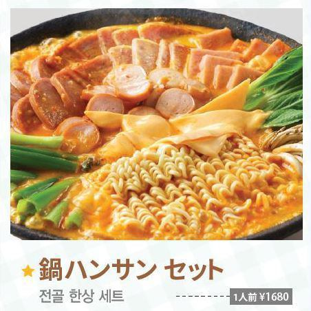
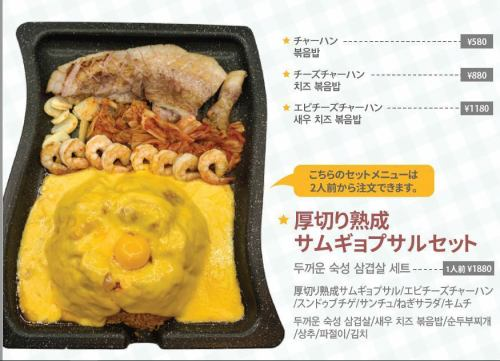
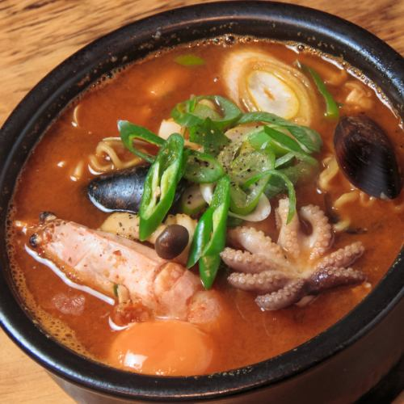

Galerie photos










Kevin, Loïc, May Nhia, Stéphanie, Estelle
Du 5 Avril au 27 Avril 2026
Adresse coréenne de Shin-Okubo, simple à ajouter dans un programme Tokyo pour un repas local abordable, proche de la gare et adapté à un petit groupe.










Bijurujan Shin-Okubo est une option utile si vous voulez un restaurant local, simple et moins cher qu'un grand buffet. Le secteur est très vivant, l'adresse est à 3 minutes de Shin-Okubo, et la carte officielle montre des plats autour de 1 000 à 2 000 JPY selon le moment et le niveau de faim.
Conversion indicative sur base 1 EUR = 183.67 JPY (BCE, 10/03/2026). Taux variable.